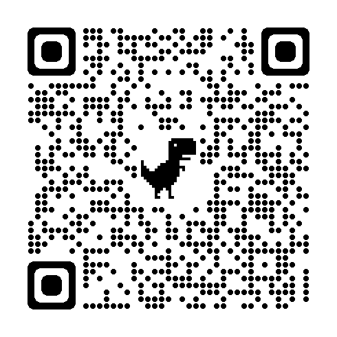

My nickname in english is Harry
My hobby is playing soccer
My favourite game is mobile legends
my favourite anime is attack on titan
I have many favourite food so I wouldnt name it
I am 13 years old
I am gamer and great student at the same time
I like football
Football history
Хадан чулуугаар хийсэн бөмбөгийг оролцуулсан багийн тоглолтын анхны мэдэгдэж буй жишээ нь Месоамерикийн эртний соёлд 3000 гаруй жилийн өмнө тохиолдож байжээ. Тоглоомын янз бүрийн хувилбарууд томоохон бүс нутгуудад тархсан байсан ч үүнийг Чатали гэж нэрлэдэг Ацтекүүд байсан. Зарим зан үйлийн үеэр бөмбөг нь нарыг бэлгэдэж, хожигдсон багийн ахлагчийг бурханд тахил өргөдөг байв. Месоамерикийн бөмбөгний тоглоомын хувилбаруудын нэг онцлог шинж чанар нь резинээр хийсэн үсэрч буй бөмбөг байв - өөр ямар ч эртний соёлд резинэн материал байгаагүй
The best footballer is
Minii durtai mobile legendsiin baatar
Гусион бол алуурчин дүртэй баатар юм. Түүнийг шидтэн овгийн гаралтай айлын хүүхэд гэж ярьдаг. Үргэлж ид шид хэрэглэдэг гэр бүлийнхээ гутаан доромжлолыг арилгахын тулд Гусион бослого гаргаж, үүрийн туяа руу чиглэв.Жижиг сэлэм бол түүний ашигладаг гол зэвсэг юм. Gusion нь ид шидийн асар их хохирол учруулж чадна. Энэ нь түүнийг Каринагийн дараа хамгийн их хохирол амссан баатрын алуурчин болгож байна. Хэрэв та өөрт байгаа тоглоомын техникийг эзэмшиж чадвал Гусион хамгийн үхлийн аюултай баатар алуурчин болох болно.
photo of the best gusion skin
Attack on titan tuuh
Түүхэнд хүн төрөлхтний үлдэгдэл Титан гэгддэг хүмүүсийг идэгч аварга том биетүүдээс хамгаалахын тулд гурван ханатай агуу хотуудад амьдардаг бөгөөд тэд сэрэмжлүүлэггүйгээр дайрдаг. Тэдний нэг нь ээж рүүгээ дайрч идэхэд Эрен Жэйгер элит Survey Corps-д элсэж Титануудаас өшөөгөө авахаар шийднэ. Эрээний хувь тавилан нь энгийн өшөө авалтаас хавьгүй хачирхалтай бөгөөд уйтгар гунигтай байдаг бөгөөд цувралын туршид бид Титануудын бүтээлийн үндэсээс эхлээд хуучин улс төрийн өшөө хорслыг хүртэл бүгдийг нь хардаг. Дөрвөн улирал шат дараалалтай ирлээ. 25 ангиас бүрдсэн 1-р улирал 2013 оны хавраас намар хүртэл үргэлжилсэн. Дараа нь фенүүд нь 2017 оны хавар эхэлж ердөө 12 анги хүргэсэн 2-р цувралыг гурван жил гаруй хүлээх шаардлагатай болсон. 3-р улирал 2018 оны намар 12 анги, 2019 оны хавар 10 анги гарсан. Төгсгөлийн анги нь 2020 оны 12-р сард 16 ангиар нээлтээ хийсэн бөгөөд дараа нь 2022 оны эхээр 12 ангитай хоёр дахь анги гарсан.

minii doloo honogiin tuluvlguu
1deh udur
- mathiin daalgavar hiih
- codely suuh
2deh udur
- mathiin daalgavar hiih
- html beldeh
3deh udur
- mathiin daalgavar hiih
- CODELY suuh
4deh udur
- amrah
5 deh udur
- mathiin daalgavar hiih
- codely suuh
6 deh udur
- mathed suuna
- amrah
7 deh udur
- amrah